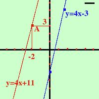

|
Esempio: trovare l'equazione della retta passante per il punto A(-2, 3) e parallela alla retta y = 4x - 3 Ho: x1 = -2 y1 = 3 m1 = 4  Applico la formula: y - y1 = m1(x - x1) y - 3 = 4(x + 2) y - 3 = 4x + 8 y = 4x + 8 + 3 y = 4x + 11 E' sempre buona norma rappresentare il problema geometricamente per poi poter controllare l'esattezza dei risultati (se avessi fatto la figura piu' grande avrei visto la retta tagliare l'asse y nel punto 11); a destra puoi vedere la rappresentazione grafica del problema |